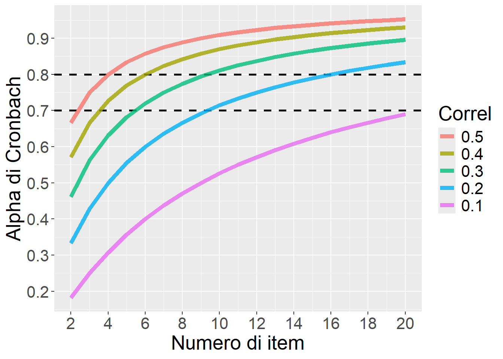

L’Alpha di Cronbach (\(\alpha\)) ci informa sull’attendibilità riflettendo la consistenza interna di uno strumento che aggrega più parti (item) di informazione. Attendibilità di cosa? di quanto il Sum score (o comunque una sua trasformazione lineare) approssimi bene il vero tratto latente che vogliamo misurare, date certe assunzioni (più dettagli sotto).
L’Alpha non è un buon indicatore della monofattorialità degli item, ma non è a questo che serve.
È importante la consistenza interna? Sì, i motivi per fare attenzione a un tale indice sono almeno due:
Un’attendibilità maggiore aumenta la precisione delle stime del tratto latente nei SEM, e dunque la potenza statistica (se stai lavorando su effetti che riguardano le differenze individuali).
In ambito di assessment, un’attendibilità maggiore aumenta la precisione delle stime individuali (anche riducendo la regressione verso la media dovuta al rumore).
Ma la devo proprio calcolare sempre? NO.
La devi calcolare se stai costruendo un nuovo strumento e, dopo averne stabilito la validità e la struttura fattoriale, vuoi anche un’indicazione dell’attendibilità del suo punteggio totale.
Se stai usando uno strumento già standardizzato e validato, l’attendibilità da considerare è quella riportata nella validazione originale.
\(\overline{r}\) è la correlazione media tra tutte le coppie di item (i.e., media della matrice di correlazione tolta la diagonale principale).
Per gioco, vediamo l’Alpha di Cronbach stimato per diverse combinazioni di Numero di item e Correlazione media tra item
Show the code
library(ggplot2)nr =data.frame(expand.grid(k=2:20,Correl=c(.1,.2,.3,.4,.5)),AlphaCronbach=NA)nr$AlphaCronbach = (nr$k*nr$Correl)/(1+(nr$k-1)*nr$Correl)nr$Correl =factor(nr$Correl,levels=rev(unique(nr$Correl)))ggplot(nr,aes(x=k,y=AlphaCronbach,group=Correl,color=Correl))+geom_hline(yintercept=c(0.70,0.80),size=1,linetype=2)+geom_line(size=2,alpha=.8)+theme(text=element_text(size=20))+scale_y_continuous(breaks=seq(0,1,.1))+scale_x_continuous(breaks=seq(2,20,2))+xlab("Numero di item")+ylab("Alpha di Cronbach")

Assunzioni dell’Alpha di Cronbach
Affinché l’Alpha sia interpretabile correttamente:
la monofattorialità deve essere assunta a priori;
gli item devono essere tau-equivalenti, cioè avere gli stessi factor loading, cioè contribuire in modo uguale al punteggio fattoriale totale (assumendo che calcoleremo il Sum score);
almeno se si usa la formula qui sopra gli item dovrebbero avere proprietà metriche, cioè essere misurati su un ideale continuo su scala a intervalli e non, ad esempio, su scala Likert/ordinale (ci sono comunque delle formule che la adattano per item ordinali). In realtà, nonostante queste pesanti assunzioni, l’Alpha può spesso va decentemente bene anche di fronte a qualche misfit.
Significato dell’Alpha di Cronbach
Ma in pratica cosa significa l’Alpha di Cronbach? Ad esempio, se \(\alpha\)= 0.60, cosa significa quel 0.60?
✘ NON corrisponde alla correlazione media tra gli item, sebbene come visto sopra dipenda da essa. (Per fare la prova, basta verificare che l’\(\alpha\) è quasi sempre superiore alla correlazione media, e che comunque a parità di correlazione media, \(\alpha\) è tanto più quanto più alto è il numero di item \(k\).)
✔ Significa che il 60% della varianza del Sum score totale (che valido come factor score in base alle assunzioni di cui sopra) riflette il vero costrutto/tratto latente che la scala dovrebbe misurare.
Possiamo dire: la correlazione tra il Sum score e il vero tratto latente che vogliamo misurare è\(\sqrt\alpha\)
Prime simulazioni in R
Generiamo 4 item da un unico costrutto latente X (l’N sia grande)
Calcoliamo il Sum score (Ss) e vediamo quanto correla col vero tratto latente X_true:
Ss =rowSums(df)cor(Ss, X_true)
[1] 0.8022132
L’Alpha di Cronbach stima la varianza comune tra Sum score e Vero tratto latente:
psych::alpha(df)$total$raw_alpha # Alpha di Cronbach
[1] 0.6432596
E infatti la radice quadrata dell’Alpha di Cronbach approssima la correlazione di cui sopra:
# Radice quadrata dell'Alpha di Cronbach coincide con la correlazione di cui soprasqrt( psych::alpha(df)$total$raw_alpha )
[1] 0.8020346
Si noti che la soglia critica di accettabilità \(\alpha > 0.70\) significa solo che la minima correlazione “accettabile” tra Sum score e Vero tratto latente deve essere 0.83666.
Quanto è preciso l’Alpha di Cronbach?
La funzione psych::alpha ci fornisce anche degli intervalli di confidenza (di default al 95%).
Comunque, per avere una rappresentazione “grafica”, oltre che per essere sicuri che l’Alpha di Cronbach non sia biased, possiamo fare una simulazione.
Nella seguente simulazione produciamo 300 dataset con N campionato da \(U(50, 500)\), con k = 5 item, che potrebbero essere condizioni “rappresentative” di studi fatti decentemente. La figura mostra l’Alpha di Cronbach stimato in funzione dell’effettiva correlazione tra vero tratto latente e Sum Score. Non sembra male.
L’Alpha di Crobach è in linea col valore vero -0.002, intervallo quantile al 90%: (-0.056, 0.044) (ma non ha molto senso interpretarlo perché l’N è variabile). Il RMSE (media quadratica degli scarti) è 0.04 (anche questo però ha poco senso perché dipende dall’N.)
Cosa succede se gli item non sono tau-equivalenti?
Nella realtà è assai difficile che gli item siano ugualmente rappresentativi del costrutto che misurano (tau-equivalenti). Ma è un problema?
Nell’esempio qui sotto i loading sono ampiamente diversi, e (dunque) le correlazioni abbastanza variegate (come succede nella realtà). L’N è molto grande per minimizzare l’errore di campionamento.
Ecco la correlazione tra Sum score e vero costrutto latente:
cor(rowSums(df),X_true) # correlazione "corretta" / vera
[1] 0.8409776
Ed ecco la stessa correlazione stimata attraverso l’Alpha di Cronbach:
sqrt( psych::alpha(df)$total$raw_alpha ) # correlazione stimata da Alpha di Cronbach
[1] 0.8189982
(si noti che l’Alpha di Cronbach è 0.670758, quella sopra è la correlazione stimata)
Dunque, l’Alpha di Cronbach sottostima un po’ l’attendibilità del Sum score quando la tau-equivalenza è violata (in modo abbastanza forte), ma non poi così tanto.
Meglio di tutto, anche per l’attendibilità, sarebbe usare il Factor Score stimato da una CFA, e NON il Sum score, ma anche qui la discrepanza non è poi così ampia:
Per avere un colpo d’occhio, vediamo questa figura. Mostra l’Alpha di Cronbach in funzione della correlazione vera col tratto latente. L’N è molto grande per minimizzare l’errore di campionamento. Di nuovo, k=5. I loading medi sono campionati a diversi livelli in \([0.40, 1.20]\), poi a ciascuno dei 5 loading viene sommato rispettivamente un valore nel vettore (-0.40, -0.25, 0, +0.25, +0.40) per creare violazione della tau-equivalenza.
Cosa avremmo potuto fare di meglio? Avremmo potuto calcolare la reliability dalla CFA!
Si noti che questi valori sono giusti: la correlazione stimata in base all’Alpha è proprio 0.8189982, mentre quella stimata in base all’omega è 0.8405761 (si tratta infatti delle radici quadrate dei coefficienti).
Studio sistematico della violazione della tau-equivalenza
La figura suggerisce che la violazione (abbastanza rilevante) della tau-equivalenza genera una sistematica sottostima dell’attendibilità, ma non in modo esorbitante.